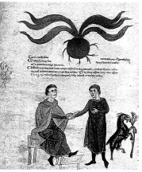

ŞEKİL 43. Bir 13. yüzyıl Ortaçağ ilaç kitabından güz çiğdeminin betimi
(Die Österreichische Nationalbibliothek, Viyana).2
→ Havlıcan: İbn Sina, havlıcanın çeşitlerini betimlemiş ve onu mide ilacı, sancı giderici ve afrodizyak olarak övmüştür. Havlıcanın sindirim rahatsızlıklarında ve iştahsızlığa karşı kullanımı, günümüzde de önerilmektedir.
→ Kâfur: “Gölgesinde yüz kişinin barınabileceği” söylenen kalın ve uzun kamış şeklinde 8-15 m yüksekliğindeki, yaprak dökmeyen çok uzun ömürlü kâfur ağacının (“Cinnamomum camphora”) iç kısmından elde edilen kristal görünümlü renksiz, yarı saydam ve keskin kokulu bir maddedir. İbn Sina ve Serapion (Yuhanna ibn Sarâbiyûn), kâfuru safra ateşi ve akciğer iltihabında serinletici (ateş düşürücü) araç olarak betimlemiş; daha da önemlisi damla hastalığı, romatizma ve kulak rahatsızlıklarında merhem ve ovma sıvısı (liniment) olarak, aynı zamanda cinsel azgınlığı baskılamak için önerilmiştir. Bu durum, Arap tıbbının aktarılmasında Batı’da önemli rol oynayan Salerno Tıp Okulu’ndan kaynaklanan bir dizede görülmektedir: “Camphora per nares, castrat odore mares” (“Kâfurun kokusu, erkeklerin cinsel gücünü elinden alır”). Alman sağlık idaresi, kâfurun yalnızca kas romatizmasında haricî olarak ve üst solunum rahatsızlıklarında dâhilî olarak kullanımını uygun bulmaktadır.
→ Karahindiba (Radika): Karahindibanın (Fars. “Tarkhashkun” → Lat. “Taraxacum”) tansiyon yüksekliğine, damar tıkanıklığına, karaciğer iltihaplarına ve sarılığa karşı şifalı olduğu belirtilmektedir. Safra rahatsızlıklarında, idrar sökücü olarak, iştahsızlıkta ve hazım güçlüklerinde kullanımı, yakın geçmişte tıbbî monografilerde yer almıştır.
→ Muskat: Küçük hindistancevizi ya da hintcevizi de denen küçük hindistancevizi ağacı ilk olarak Cava’da görülmüş, oradan İran, Arap dünyası ve sonunda Avrupa’ya ulaşmıştır. 540 yılında Konstantinopolis’te tanınmıştır. Onun hekimlikte ilk kullanımı Araplar tarafından betimlenmiştir. Müslüman hekimler onu iştah artırıcı ve afrodizyak olarak, kolera benzeri vakalarda, karaciğer ve dalak rahatsızlıklarında ve sinirsel baş ağrılarında dışsal (hâricî) olarak kullanmışlardır. Amerikan hapishanelerinde tutuklular tarafından ruhsal-düzenleyici olarak kötüye kullanılmıştır ki bu kullanımı, daha önce Ortaçağ Araplarında da biliniyor ve uygulanıyordu.
→ Sandal ağacı: Sandal ağacı (“Santalum album”), en eski Hint kültür bitkilerindendir. Cennetteki bir ağaçtan türediği düşünülmektedir ve Hindu mitolojisine göre “Güneş Arabası”, sandal ağacından yapılmıştır. Yerel iltihaplanmalarda merhem olarak ve her tür ağrıya karşı kullanılan bir ev ilacı idi. Galenos’un düşüncelerini izleyen Ortaçağ Müslüman hekimleri sandal ağacını, “soğuk” ve “kuru”, kalbe iyi gelen, güçlendirici, damar büzücü, her derde deva ve afrodizyak, ayrıca da iltihaplı şişkinliklere karşı ilaç olarak tanımlamışlardır. Büyük İskender sandal ağacını, ordusu aracılığıyla Doğu’dan sağlamıştır. Avrupa tıbbında kullanılışı, Afrikalı Konstantin’e (Constantinus Africanus) (1015-1067) dek geri uzanır. Bugünkü bilgilere göre beyaz sandal ağacı antibakteriyel ve kramp çözücü özelliklere sahiptir. Günümüzde idrar yolları enfeksiyonlarında kullanılmaktadır.
→ Sinameki yaprağı ve kabuğu: Sinameki bir Arap eczasıdır ve kullanımı Hz. Muhammed tarafından önerilmiştir. Hekim el-Kindî (803-873), sinamekinin kutsal kent Mekke’de ortaya çıktığını yazmış, Hippokrates ile Galenos’un eserlerini en kusursuz halleriyle Arapça’ya çevirmiş olan Huneyn ibn İshak (809-873) ise sinamekini deri hastalıklarında, sarada ve bağırsaklar yoluyla bedeni temizlemede önermiştir. Mekke sinamekisi, eskilerin “phlegma” dediği balgam-salya-sümük salgılarını söktürücü olarak önde gelen araç olarak geçerliydi. Boşaltıcı ve bedeni “temizleyici” araç, yani müshil olan bu bitki, yüksek fiyatı nedeniyle Ortaçağ Avrupa’sında yaygın kullanıma girememişti.
→ Şerbetçiotu: Bu bitkinin en erken betimi, Yakubî Hıristiyan hekim, Mardin’li Yuhanna ibn Mâseveyh’e (Latince’de Johannes Mesuë) (777-857) dek geri uzanır. Ona göre şerbetçiotu, özellikle peynir suyu (kesik süt suyu) ile birlikte kandan safrayı temizler, safra ateşini ve sarılığı iyileştirir. Bingen’li Hildegard, Physica (Doğa Bilgisi) adlı eserinde bu bitkiden söz etmiştir. Onun yatıştırıcı etkisinden ilk söz eden kişi Arap botanikçi ve eczacı Malaga’lı Abdullah ibn el-Baytar (1197-1248), narkotik etkisinden açıkça ilk söz eden ise ünlü botanikçi ve hekim Carolus Linnaeus’dur. Amerikan hekimleri ilk olarak onu, ağrı dindirici, dinlendirici ve süreğen (kronik) uykusuzluk durumlarında ilaç olarak önermişlerdir.
→ Turunç kabukları: Tıbbî kullanımı İbn Sina ve onun çağdaşı Arap hekimlerine dek uzanır. İştahsızlık ve hazım güçlüklerindeki kullanımı, günümüzde de yeterince belgelenen bir uygulamadır.
→ Zerdeçal: Zerdeçal (sarıkök, hintsafranı), günümüzden 2000 yıl kadar önce Sümerler’de bilinmekteydi. Hintli hekimler, zerdeçalı sıcak, acı, keskin, büzücü ve kurutucu olarak nitelemişlerdir. Salgı artırıcı olup deri hastalıklarına karşı kullanımından kaçınılmalıdır. “İşaret öğretisi”ne göre sarılıkta etkin olması beklenir ve geç dönemde Araplar, zerdeçal kökünü her şeyden önce onun sarı renginden ötürü karaciğer hastalıklarında ve sarılıkta kullanmışlardır. Günümüzde köri (İng. “curry”) diye bilinen karışım baharatın içinde en önemli bileşen olarak yer alır ve köri, safra söktürücüdür.
Tıbbî kullanımları Araplar kanalıyla Avrupa’ya geçen diğer şifalı bitki ve eczalar arasında yer alan atkuyruğu bitkisi ve zerdeçöp de başlangıçları Hindistan’a dek geri uzanan bitkilerdir.
Arapların kullanmış oldukları kozmetik ve özel amaçlı karışım reçeteleri konusunda şu dört örnek verilebilir:100
→ Diş temizlemek üzere bir diş tozu reçetesi: “Nöbet (nebat, bitki) şekeri alınıp öğütülür, sirkeye batırılan parmakla ıslatılan bu toz, bir süre ovularak dişlere sürülür, ardından dişler yıkanır. Haftada bir kez uygulanır ve sonuç vericidir”.
→ Ağız kokusunu giderici pastil reçetesi: “Her biri 10 dirhem (1 dirhem = 1/400 okka = 3,14 gram; 1 okka = 1250 gram) olmak üzere dikensiz kırmızı gül, sandal ağacı ve topalak (kırkboğum); her biri 5 dirhem olmak üzere tarçın kabuğu, hintsümbülü, seylan tarçını, kuru karanfil, küçük hindistancevizi, deve otu ve beyaz “sikoz”; her biri 10 dirhem olmak üzere kurutulmuş limon kabuğu ve limon çiçeği; her biri 2 dirhem olmak üzere misk, gerçek sarısabır ağacı odunu, mastik ve küçük hindistancevizi çiçeği, yarım dirhem kâfur ve yarım danik (1 danik = 0,8 gram) Türk miski. Hepsi birlikte iyice öğütülür ve limon çiçeği suyu ile yoğrulduktan sonra nohut büyüklüğünde biçimlendirilir. Ağza alınarak kullanılır ve çok iyi sonuç verir”.
→ Saç büyümesi için bir karışım reçetesi: “Çörekotu alınıp öğütülür, suya atılıp karıştırılır ve başa sürülür. Saçlar büyümeye başlar. Ağrıya yol açarsa, çok etkili demektir”.
→ Saç boyası için bir reçete: “Kuru üzüm çekirdeği al, iyice yıka, sürme hazırlar gibi çok ince bir şekilde öğüt ve toprak bir kabın içine koy. Daha sonra üzerini örtecek miktarda susam yağı dök. Toprak kabı bir ay boyu bir gübre yığını içinde gömülü tut. Çok güzel bir boya maddesine dönüşür”.
Simyacı Câbir ibn Hayyan’ın (720-813) Zehirler Kitabı’nda hayvansal zehirler olarak çıngıraklı yılan ödü, kaplan ödü, kaplumbağa dili, geyiğin kuyruk kısmı, deniz tavşanı, kurbağa, İspanyol sineği, deniz kurbağası, dört ayaklıların teri, yılanlar, örümcekler, gekolar, kertenkeleler, ayrıca kimi bilinmedik hayvanlar; bitkisel zehirler olarak boğanotu, çavdarmahmuzu (deliceotu), afyon, banotu, baldıran, karamuk, karambol ağacı çiçeği, mantarlar, sedefotu, malaga fasulyesi, “Cocculae orientalis”, “Daphne mezereum”, ebucehil karpuzu (acıdülek), zakkum, muhabbetçiçeği (“Reseda odorata”), “Trichilia emetica”, kargabüken, adamotu (“Mandragora”), itüzümü, şeytantersi (“Asa foetida”), “Euphorbia pityusa”, türbit kökü (“Ipomoea turpethum”), kantaron, eşekhıyarı, mahmude (“Convolvulus scammonia”), ayrıca kimi bilinmedik bitkiler; mineral zehirler olarak da bakır çalığı, civa, kurşun beyazı, kurşun parlağı, rastıktaşı, arsenik, zincifre, sülüğen, kavrulmuş kurşun, zırnık (realgar ya da orpiment şekillerinde), sönmüş kireç, vitriyol, demir tozu ve demir pası ile kavrulmuş altın yer almaktadır.101 Câbir’in saç dökülmesine karşı önerdiği reçetede kirpi derisi, amonyak ve ayı yağı ya da ödü yer almaktadır.56
Müslümanların inanışına göre Allah, insanoğlunun her hastalığı için doğada bir deva yaratmıştır. Eczacının dükkânı, Allah’ın kullarına sunduğu bu armağanlarla doludur. İslâm’ın peygamberi şöyle demiştir: “Allah, bedenen ve ruhen güçlü olan inananları, güçsüzlerden daha çok sever”. İslâm dünyası eczacılık bilimini, Yunan bilgini Dioskorides’ten (İS ~20-79) almıştır. Romalılar döneminde Anadolu’nun Kilikya yöresindeki Anazarbos / Anazarba kentinde (bugünkü Adana’nın Kozan ilçesi Anavarza ya da Dilekkaya Köyü) doğan, Atina’da eğitim gören ve İmparator Neron (yön. 54-68) ve Vespasianus’un (yön. 69-79) ordularında askerî cerrah olarak çalışmış olan Dioskorides, eğitimini İskenderiye ve Bergama’da (Pergamon) almış; İtalya, Galya, İspanya ve Kuzey Afrika’yı dolaşmış, İskenderiye Kütüphanesi’nde bulunmuş, yüzlerce bitkinin varlığını ve tıbbî değerini kaydetmiştir. İncelemelerinde öğretmeni ve dostu Lecanius Areius (1. yüzyıl) ile etkileşimde bulunduğu söylenir. İS 64 ya da 77 yılı dolayında yazdığı 5 kitaplık Yunanca Peri hyles iatrikes (İlâç Bilgisi Üzerine; Latince’de De materia medica) adlı çok ünlü farmakoloji eseri, 600 kadar yararlı bitkiyi ve 1000’i aşkın basit ilacın hazırlanmasını betimler (bu ilaçlardan 813’ü bitkisel, 101’i hayvansal ve 102’si mineralseldir). 1. Kitap’ta baharat, yağlar, merhemler, ağaçlar; 2. Kitap’ta hayvanlar ve hayvansal ürünler (bal, süt, yağ), tahıllar, bahçe çiçekleri; 3. ve 4. Kitap’ta gıda ya da ilaç olarak kullanılan otlar, kökler, narkotik ve zehirli tıbbî bitkiler; 5. Kitap’ta ise üzüm çeşitleri, şarap ve diğer içecekler ve mineraller işlenmiştir. Daha geç dönemde esere, zehirler üzerine iki kitap daha eklenmişse de bunlar Dioskorides’e ait değildir. Eserdeki her bir madde, aynı şema üzerine işlenmiştir. Buna göre yaklaşık olarak, bir bitkinin adını onun eşanlamlıları izlemekte, sonunda onun yayılım alanları ve bitki morfolojisi verilmektedir. Arada, bitkinin etken maddelerinin kazanımı ve hazırlanması (köklerin ezilmesi, özsuların elde edilmesi, üzüm suyunun kaynatılması, yaprakların sirke ile karıştırılması vb.) verilmektedir. Eserde şifalı bitkilerle ilgili olarak şu bilgiler verilmektedir: Bitkilerin farklı adları (yörelere göre sık sık değişiklik gösteren adların verilmesi, bir bitkinin değişik adlandırmalarının bulunmasını olanaklı kılmaktadır), bitkinin tümünün tanımı (Akdeniz bölgesinde yetiştiği yerler ve dağılımıyla birlikte), bitkinin tıpta kullanılan kısımları (sözgelimi kökleri, yaprakları, tohumları ya da sakızı), saklanma yöntemleri (taze ya da kurutulmuş halde), ilaç olarak özellikleri (dört temel öğe ile bağlantılı olarak “sıcak”, “soğuk”, “kuru” ya da “nemli” olma özelliği), tedavideki kullanımları (hangi bitkinin hangi hastalığın tedavisinde kullanıldığı), bitkilerin ilaca dönüştürülme yolları, kullanım dozları ve tedavi süreleri, ilacın (varsa) yan etkileri, etkili olup olmadığının sınanma yöntemleri, bitkinin tıp mesleğinde, kozmetik alanında ve veterinerlikte kullanımları vb. Kimine göre bu eser, çok büyük bir olasılıkla hekim Krateuas’ın daha önce yazmış olduğu Rhizomotikon (Bitki Kökleri Üzerine) adlı eserine dayanmaktadır. Çağdaş tarih araştırmaları ise Dioskorides’in bu eserindeki birçok bilgiyi, Romalı yazar Sextius Niger’in (1. yüzyıl ilk yarısı) tıbbî bitkiler üzerine yazdığı De materia medica (Tıbbî Maddeler) adlı kitabından aldığını ortaya koymaktadır.43 Eserin günümüze ulaşmış en iyi kopyası, İS 512’de Konstantinopolis’te yazılan ve günümüzde bulunduğu Viyana kentinin adıyla Vienna Dioscorides ya da Codex Vindobonensis Medicus Graecus olarak bilinen, ama ayrıca Codex Julianae Aniciae ya da Codex Constantinopolitanus (“İstanbul Elyazması”) diye de adlandırılan nüsha olup bunda çeşitli bitkilerin Yunanca ve Latince adları ile renkli resimleri de yer almaktadır.102 Bu eser, 1453 yılında İstanbul’un Türkler tarafından fethinden sonra Türk sultanının hazinesine konmuş, 1569 yılında Habsburg elçisi Baron Ogier Ghiselin de Busbecq (1522-1592) tarafından İstanbul’da keşfedilmişse de parası yetmediğinden satın alınamamış, daha sonra onun gayreti ve ünlü Yahudi hekim Musa bin Hamun’un (1490-1554) oğlunun aracılığıyla Alman İmparatoru, Bohemya ve Macaristan Kralı II. Maximilian (1527-1576) adına 100 Duka altınına satın alınarak Viyana’ya gönderilmiştir. Günümüzde Viyana Ulusal Kütüphanesi’nde (Die Österreichische Nationalbibliothek) korunan eser, “botanik sanatının görkemli bir anıtı” olarak nitelenmektedir. Olağanüstü güzellikte resimlenmiş bu eserdeki bitki çizimleri, yaklaşık 1000 yıl boyu aşılamamıştır. Eserin en önemli yanı, Dioskorides tarafından kullanılmış bitki adlarına ilişkin yorumlar ve içerdiği 383 tam sayfa bitki resimleri ile küçük boyda çizilmiş hayvan resimleridir. Eserin kapak sayfasında en başta Galenos olmak üzere Eskiçağ’ın ünlü hekimlerinden Nikandros, Quintus Curtius Rufus (etk. 40-50), Karystos’lu Andreas (İÖ 1. yüzyıl), Apollonius Mys ve Dioskorides’in resimleri yer alır. Bu kopya, İS 472 yılında Roma İmparatoru olan Flavius Anicius Olybrius’un (yön. ve ölm. 472) kızı Prenses Anicia Juliana’ya (Anikia Iouliana) (462- ~535), Pera’da (Beyoğlu) St. Marie (Meryem Ana) Kilisesi’ni yaptırıp vakfetmesi nedeniyle Konstantinopolis kentinde bir dış mahalle olan Honoratae halkının şükran borcu olarak armağan edilmiştir. Bitki resimleri, erken dönem büyük botanikçi ve bitki çizimcisi Bergama’lı Krateuas’ınkilere benzemektedir. Dioskorides’in ünlü eserinin günümüze kalan çok sayıdaki resimlenmiş Yunanca elyazma nüshalarından biri, 7. yüzyıldan kalma olup İtalya’nın Napoli kentindeki Biblioteca Nazionale’de korunan Codex Neapolitanus’tur.14, 28, 103, 104 Eserin Cambridge’te, Bologna’da, Vatikan’da, Münih’te ve Viyana’da da değişik zamanlarda hazırlanmış önemli nüshaları vardır. İslâm dünyasında ise Nesturî Hıristiyanlar tarafından Yunanca’dan Süryanice’ye çevrilmiş olan bir Dioskorides nüshası Halife el-Mütevekkil’in (yön. 847-861) emriyle Bağdat’lı hekim İstefan ibn Basil (~9. yüzyıl) tarafından Arapça’ya çevrilmiş; 948 yılında Bizans imparatoru bu eserin güzel resimlenmiş Yunanca elyazma bir nüshasını Endülüs Halifesi III. Abdurrahman el-Nâsır’a (yön. 912-961) armağan olarak göndermiş ve orada Arapça’ya çevrilmiş; Süryani bilgin Bar Hebraeus (Ebu’l-Ferec ibn el-İbrî) (1226-1286) 1250 yılında hazırladığı Süryanice bir değişkesi daha sonra Arapça’ya çevrilmiş; Farsça bir çevirisi İran’da Meşhed’deki türbede bulunmakta; ayrıca 1224 tarihli bol resimli Arapça bir nüshası (Codex 2148), İstanbul Topkapı Sarayı Müzesi’nde yer almaktadır
Dioskorides’in De materia medica (Tıbbî Maddeler Üzerine) adlı eseri, bugüne dek yazılmış en başarılı botanik başvuru kitabı olarak nitelenmektedir. Gerçekte bir şifalı bitkiler kitabı olup aynı zamanda ilk olarak resimlenmiş kitaptır. İlk kopyaları olasılıkla resimli değildi. Eser 19. yüzyıl başına kadar kullanımda kalmış, kimyada kullanılan etken maddelerin de bitkilerden elde edilmeye başlamasıyla çok daha fazla önem kazanmıştır. Eser, İmparator I. Ferdinand (1503-1564) ve ardılı II. Maximilian’ın özel hekimi Piero Andrea Mattioli (Latinceleştirilmiş şekliyle Petrus Andreas Matthiolus) (1501-1577) tarafından Yunanca’dan, önce Di Pedacio Dioscoride Anazarbeo libri cinque… başlığı altında İtalyanca halk diline çevrilip 1544’te yayımlandıktan sonra Latince’ye çevrilip bir yorum da eklenerek Commentarii in libros sex Pedacii Dioscoridis Anazarbei De medica materia başlığı altında 1554’te yayımlanmış, ardından da çok sayıda baskısı yapılmıştır (ŞEKİL 44). ŞEKİL 45 ve ŞEKİL 46’da, Dioskorides’in De materia medica’sının Arapça çevirisi olan bir Kitab el-Haşâyiş (Şifalı Otlar Kitabı) nüshasından, Bizans sanatı etkisi taşıyan ve Abdullah ibn el-Fazl tarafından yapılmış minyatürlerde, ilaç hazırlama sahneleri yer almaktadır.